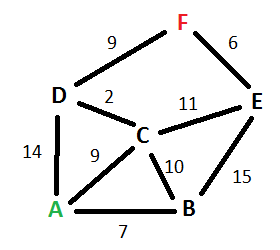

26 Jan 2016
Interview Question 2 - shortest path between two vertices, Dijkstra's algorithm
This is another common interview question at the University of Waterloo, this one is a lot harder than the last one. You might get this if you are going through one of the big 4’s (Facebook, Google, Microsoft, Apple/Amazon) interview process. Something like:
Given the weighted undirected graph below, find the shortest path between two vertices A and F

Each line in the graph has a corresponding “weight” next to it. Undirected, means that you can go in between nodes without restrictions. A real life example of this would be to think of a city: the lines (edges) are streets, which have a length in KM (the weight). The points (vertices) are intersections. Undirected means all streets are two way, directed would mean some are one way. Find the shortest way to get from point a to point f. Now you can easily do this just by looking at it, A to C to D to F. But how do you get code to do it?
I am using python3 to solve this problem.
There are a lot of algorithms you can use to solve this problem. A very common and simple one to use for something like this is Dijkstra’s algorithm. It looks like below (using our same graph as above):
 Dijkstra’s algorithm to find the shortest path between a and b. It picks the unvisited vertex with the lowest-distance, calculates the distance through it to each unvisited neighbor, and updates the neighbor’s distance if smaller. Mark visited (set to red) when done with neighbors.
Dijkstra’s algorithm to find the shortest path between a and b. It picks the unvisited vertex with the lowest-distance, calculates the distance through it to each unvisited neighbor, and updates the neighbor’s distance if smaller. Mark visited (set to red) when done with neighbors.
We will convert this algorithm to code, step by step.
First our representation of the graph in code form:
nodes = ('A', 'B', 'C', 'D', 'E', 'F')
distances = {
'A': {'B': 7, 'C': 9, 'D': 14},
'B': {'A': 7, 'C': 10, 'E': 15},
'C': {'A': 9, 'B': 10, 'D': 2, 'E': 11},
'D': {'A': 14, 'C': 2, 'F': 9},
'E': {'B': 15, 'C': 11, 'F': 6},
'F': {'D': 9, 'E': 6}}
Step 1: Assign to every node a tentative distance value: set it to zero for our initial node and to infinity for all other nodes.
Step 2: Set the initial node as current. Mark all other nodes unvisited. Create a set of all the unvisited nodes called the unvisited set.
We will create a dictionary of unvisited nodes, where the key is the vertice letter, and the value is the distance. For our distance of infinity, we will just use None.
unvisited = {node: None for node in nodes}
visited = {}
currentDistance = 0
current = 'A'
target = 'F'
unvisited[current] = currentDistance
Step 3: For the current node, consider all of its unvisited neighbors and calculate their tentative distances. Compare the newly calculated tentative distance to the current assigned value and assign the smaller one. For example, if the current node A is marked with a distance of 6, and the edge connecting it with a neighbor B has length 2, then the distance to B (through A) will be 6 + 2 = 8. If B was previously marked with a distance greater than 8 then change it to 8. Otherwise, keep the current value.
We will loop through all the neighbours of our current node(‘A’), by looking at the dictionary for it’s distances. The neighbours are anyone it has a distance to.
while True:
for neighbour, distance in distances[current].items():
# only check the unvisited one
if neighbour in unvisited:
newDistance = currentDistance + distance
# set its distance to the new one if it is lower
# remember, none is +Infinity
if unvisited[neighbour] is None or unvisited[neighbour] > newDistance:
unvisited[neighbour] = newDistance
Step 4: When we are done considering all of the neighbors of the current node, mark the current node as visited and remove it from the unvisited set. A visited node will never be checked again.
Simple enough, move it from unvisited to visited
# still in the while loop, after the for loop
visited[current] = currentDistance
del unvisited[current]
Step 5: If the destination node has been marked visited (when planning a route between two specific nodes) or if the smallest tentative distance among the nodes in the unvisited set is infinity (when planning a complete traversal; occurs when there is no connection between the initial node and remaining unvisited nodes), then stop. The algorithm has finished.
So we check if our destination is visited, or if there are no more unvisited nodes, or if all the remaining unvisited nodes are infinity. In the last case it means that one of the nodes isn’t connected to any of the others.
# still in the while loop, after the for loop
if not unvisited or target in visited:
break
#node[1] is current distance, get any that aren't infinity (neighbours)
candidates = [node for node in unvisited.items() if node[1]]
if not candidates:
break
Step 6: Otherwise, select the unvisited node that is marked with the smallest tentative distance, set it as the new “current node”, and go back to step 3.
So we need to sort the neighbours by distance and get the closest one. The key for the sort is going too be x[1], which is the distance.
# still in the while loop, after the for loop
# sort based on distance (x[1] is current distance), get closest one ([0])
current, currentDistance = sorted(candidates, key=lambda x: x[1])[0]
# end of while loop, go back to top
And then finally, after the while loop is done
print(visited[target])
And that’s it.
You can also easily find the distance from the start to ALL nodes by making this small change
# original, point A to F
if not unvisited or target in visited:
break
# altered, point A to ALL
if not unvisited:
break
# at the end of the while loop, do
print(visited)
The complete code below.
nodes = ('A', 'B', 'C', 'D', 'E', 'F')
distances = {
'A': {'B': 7, 'C': 9, 'D': 14},
'B': {'A': 7, 'C': 10, 'E': 15},
'C': {'A': 9, 'B': 10, 'D': 2, 'E': 11},
'D': {'A': 14, 'C': 2, 'F': 9},
'E': {'B': 15, 'C': 11, 'F': 6},
'F': {'D': 9, 'E': 6}}
unvisited = {node: None for node in nodes} # using None as +inf
visited = {}
current = 'A'
target = 'F'
currentDistance = 0
unvisited[current] = currentDistance
while True:
for neighbour, distance in distances[current].items():
if neighbour in unvisited:
newDistance = currentDistance + distance
if unvisited[neighbour] is None or unvisited[neighbour] > newDistance:
unvisited[neighbour] = newDistance
visited[current] = currentDistance
del unvisited[current]
if not unvisited or target in visited:
break
candidates = [node for node in unvisited.items() if node[1]] #node[1] is current distance
if not candidates:
break
current, currentDistance = sorted(candidates, key=lambda x: x[1])[0]
print(visited[target])
Some other interesting variations to think about
- What if the graph was unweighted? You can still use dijkstra’s algorithm, using weights of 1. The only problem is the time complexity. In this case it would be better to use a breadth first search.
- Unweighted and directed?
- weighted and directed?
- Second shortest path?
Thanks,
Adam Kenneweg